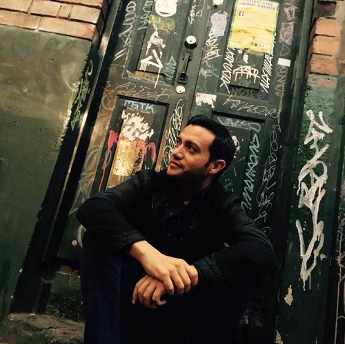
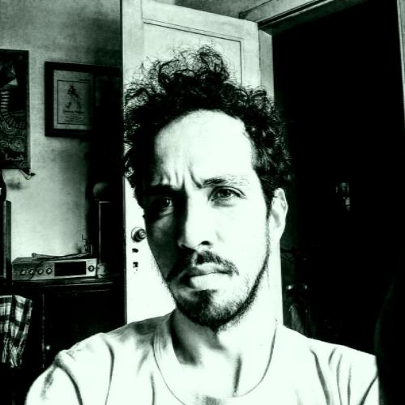
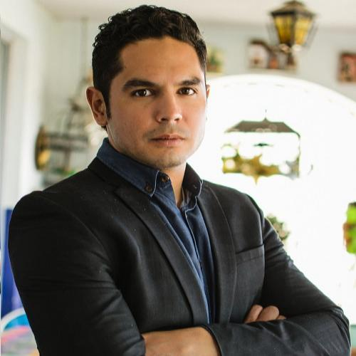

Mentores del Hackatón

Gerardo Chairez
Dr. en Tics. Dentro de su trayectoria profesional resaltan marcas como Adobe, Lego, Pedigree, Dove, Milky Way, MVS y Snickers, entre otras. Además de pertenecer al departamento C4 de Tecnología en el proyecto Internacionar Saludo Mesoamérica 2015; financiado por Billa Gates, Carlos Slim y el Banco Interamericano de Desarrollo(BID). Incursionó en animación y Visual Effects (VFX) para cine i TV participando en peliculas nacionales y una serie europea. Actualmente es miembro de Leitmotiv Media Studio en Querétaro y Director General de Beahero Animation Studio en Zacatecas. En Noviembre del 2016 concluyó su capacitación en Querétaro con Enrique Navarrete, animador de Shrek Dreamworks, donde también participó, como parte de los ponentes, Manny Rodriguez animador de Pixar.
Luis Daniel Beltrán
Desde muy temprana edad y de manera autodidacta se introdujo en el mundo de la tecnología llevándolo con los años a ser uno de los primeros usuarios de Internet en México. En la Universidad Anáhuac cursó la Licenciatura en Informática. En la actualidad se especializa en montar y administrar infraestructura de seguridad para aplicaciones y sitios web de alto tráfico. A pesar de tener una formación altamente tecnológica es un apasionado de la naturaleza. Esto lo llevó a construir su propia casa 100% sustentable basada en una técnica innovadora y ecológica. Desde el año 2012 dedica parte de su tiempo libre al estudio de las criptomonedas. En este momento lidera un proyecto (pesodigital.org) para llevar la Cadena de Bloques como un instrumento legal en el País.
Martha Mena
Ingeniera en Electrónica e ingeniera en computación con Maestría en Ingeniería de Software. Certificada en Java Associated, Developer y Web Components, así como en bases de datos por parte de Oracle y en el lenguaje de programación Python. En el 2015 ganó el 3er lugar de la convocatoria del Emprendimiento en CIMAT a nivel nacional. Actualmente cuenta con una patente en tramite relacionada con procesamiento de imágenes y estimación de medidas con móviles. Desde hace cinco años maneja con dos socios la empresa de desarrollo de tecnología Octet++ que actualmente cuenta con tres versiones de medidores de humedad y temperatura del suelo agrícola a diferentes profundidad, controlados por dispositivos móviles con sistema operativo iOS y Android mediante Bluetooth LE.

Paul Rojas
Mentor de Mercadotecnia Licenciatura en Mercadotecnia en Universidad Autónoma de Durango (Campus Durango) Maestría en Publicidad en Universidad de La Salle Bajío Maestría en Neuromarketing e Investigación de Mercados OBS/Universidad de Barcelona (Por iniciar)Consultor Independiente en área de Marketing desde 2005 Catedrático en distintas Universidades en las áreas de Marketing, Investigación de Mercados, Publicidad y Emprendimiento Consultor del Centro de Innovación e Incubación Empresarial del ITSF (2009-2014) Asesor del comité de Mercadotecnia del Cluster turístico del Estado de Zacatecas Asesor del Proyecto Emprende Ya, Zacatecas y Reto Emprende en el Consejo estatal de Desarrollo Económico del Estado. Gerente de Ventas y marketing de la empresa Productos Alimenticios Regias (2013-2015) CEO- Fundador y Director de agencia Meteora Marketing Studio
José Luis Andrade Pinet
Estudio Diseño Industrial en la Universidad Iberoamericana CDMX, certificado en Human Centered Design by IDEO, próximo TUM y se auto-define como un nómada moderno. Innovación, Utilidad y Estética son parte fundamental en la metodológica del buen diseño al busca resolver necesidades sin crearlas. Está en la constante búsqueda de apoyar y enriquecer el crecimiento de jóvenes, emprendedores o todo aquel que tenga una idea, que busque guía y tenga la pasión necesaria para llevarla a cabo.Miguel Angel Marin Orozco
Artista Musical por la Universidad de Guadalajara, Computational Systems Engineer en ITESO, CTO y Project Manager en WT LABS MEXICO; Speaker y Mentor de Realidad Virtual, Realidad Aumentada y Tecnologías Emergentes en comunidades de emprendimiento del País. Ferviente amante de la Música, Marketing Digital, Experiencia de Usuario y Realidad Virtual.
Moises Gutierrez
Product Owner en SocialDecode. Puedo ayudar a los equipos en marketing digital, usabilidad de desarrollo de software y pitch de venta (presentación) y negocios.
Monserrat Tapia Sáenz
Diseñadora Industrial apasionada, comprometida, workaholic de espíritu entusiasta emprendedor. Project Manager y designer en MUTA donde nos especializamos en diseño de producto y prototipado. Amplia experiencia en diseño de imagen corporativa . Por otro lado tengo más de 5 años trabajando en el área de negocios y comercilización de materias primas, empresa que comencé en el 2012 y hoy en día esta posicionada como una de las principales distribuidoras en la Ciudad de México y área metropolitana.
Raymundo Baños Cortés
Diseñador gráfico, emprendedor, restaurantero y cantante frustrado. En 2013 fundó ImpreZona, empresa dedicada a la impresión de material publicitario con entrega express. Ha participado como patrocinador de Startup Weekend por 4 años consecutivos y está comprometido con el apoyo a comunidades de tecnología y emprendimiento.Salvador Aceves
Developer, entrepreneur, occasional guitar player; but most importantly family father. Worked with Big Data Analytics for the past 4 years; and have developed with almost all under the sun since the 90s, Full Stack web dev over the past 15+ years; constantly looking to challenge myself using emerging technologies, walking the walk is more fun than talking the talk. Specialties: Project Leadership and Problem Solving Tech: BigData (CouchDB, Cassandra, Hive), NodeJS, Unit Testing, CoffeeScripting, DevOps, ChatOps, Varnish Cache, AWS stacks, + a lot of other fun stuff like realtime image analysis.
Samara Salas
Obsesiva del servicio al cliente como experiencia del usuario, ha dedicado su carrera al área de Servicios. Actualmente es CEO de Dopamina agencia de Customer Experience, ha trabado en empresas como Clip, PayPal y Nokia. Emprendedora digital co founder de DigitalAgency.mx y JetSys Marketing Group agencia digital y agencia de business by design respectivamente, a través de las cuales ha apoyado proyectos de madres emprendedoras como Founding Moms para crear mas espacios dedicados a impulsar a las mujeres en el área de emprendimientoAlberto Bustillos
Desarrollador en Kamino.us, hackathon crasher, mago y músico nada mas en ratitos.Alejandro García
Alejandro es profesor de la Maestría en Ingeniería de Software delCIMAT. Fue pionero en el desarrollo de Empresas de Base Tecnológica enZacatecas. Socio creador de Tecnologías DEXA, e inicialmente Directorde Softlogik, S.A. de C.V. Alejandro trabajó 4 años en la empresaOMINITi en Nueva York administrando una red social de 6 millones deusuarios. Alejandro es uno de los expertos nacionales en laimplantación de metodologías ágiles. Es Scrum Professional por laScrum Aliance y Kanban Trainner por Lean Kanban University.Cristian Eduardo Soto Corvera
Ingeniero en comunicaciones y electrónica Cofundador y Director General de Octet++ Technologies A lo largo de mi vida como estudiante y actualmente como profesionista, he tenido siempre la pasión e inquietud por la creación de tecnología así como su comercialización a nivel nacional e internacional, con la intención de cumplir uno de mis objetivos de vida, el colocar el nombre de México a nivel mundial como un país desarrollador de tecnología de alta calidad y competitividad. Durante todo este trayecto he emprendido varios proyectos tecnológicos, actualmente mediante la empresa Octet++ Techologies la cual dirijo, desarrollamos, fabricamos, innovamos y maquilamos tecnología para el sector agroindustrial, la cual cuenta con presencia nacional e internacional, sin duda alguna, el poner el nombre de México en alto a nivel internacional no será tarea fácil, pero tampoco será imposible.Gilberto García Rodríguez
- Director de la Incubadora de Empresas del ITESM Campus Chihuahua - Autor del programa de incubación de alto impacto para ITESM Campus Chihuahua - Experiencia como fundador, mentor y proveedor en alrededor de 50 StartUps de diferentes giros. - Consultor e Instructor en temas de Innovación y Mercadeo. - Fundador de Advisor Project - StartUp Lab en CD ChihuahuaHector Jaramillo
Héctor Manuel Jaramillo López (IC’04) es el creador y director general de Chilza, empresa del sector agroindustrial con sede en Zacatecas, que tiene entre sus principales clientes a la transnacional PepsiCo, con una venta inicial de 20 toneladas de chile en polvo y que actualmente asciende a más de 40% de proveeduría a esta empresa.
Francisco Ruiz
Ingeniero en electrónica y Sistemas Digitales por la Universidad Panamericana, especializado en dirección de operaciones. Especializado en desarrollo WEB, con diplomados en eMarketing en Queens University en Ontario, Canadá y programación en Swiss Cotage Institute en Londres Inglaterra. En 2001 funda Kiubix, empresa desarrolladora de Software en Plataforma Web.Ricardo Sauceda Gallaga
Presidente y Director General de la Compañía de Diseño de Hardware, Firmware y Software NoMADA Industries ®. Ha registrado hasta la fecha 6 Copyrights y 7 Patentes enfocadas a nuevos modelos de utilidad en hardware así como en optoelectrónica. Y mantiene relaciones estratégicas de negocio en 3 continentes. Su producto estrella, NoMADA® (Novel Microcontroller-Assisted Development Architecture), la cual permite desarrollar cualquier dispositivo de Robótica, electrónica, mecatrónica e IoT (Internet de las Cosas); actualmente es distribuido a lo largo de la república Mexicana, exportado a América Latina, Norte América y Europa. Consolidando puntos de distribución en Colombia y próximamente en Perú, Paraguay, España, así como, Canadá. Para la optimización en su distribución, así como su consolidación en el mercado global, NoMADA® Industries abrirá a mediano plazo sus instalaciones en Hong Kong, para reducir costos de producción y aprovechar los lazos económicos existentes entre Asia y el Mundo.
Emmanuel Coria
Me encargo de las operaciones diarias en la empresa y del departamento de Pre-prensa y Diseño, además de los proyectos web y de marketing Les puedo ayudar a los equipos con: Diseño Gráfico Digital, Procesos de Diseño, Planeación del Proyecto, Bosquejo e Interfaz de usuario, Creación de Marca e Identidad Corporativa. Perfeccionamiento del Pitch,Jonathan Corona
Un hábil piloto Varitech con pasión y entusiasmo por la educación tecnológica. Poco más de 7 años de experiencia desarrollando videojuegos y aplicaciones móviles, más de 10 años en desarrollo web y aún seguimos aprendiendo. Me encanta trabajar en proyectos interesantes y maximizar el uso de la tecnología para resolver problemas. Actualmente CEO en Armored Pixel, Dirección de Educación Tecnológica en DeKids, Socio Tecnológico en SICDOS e INIXIA. ¡Cambiando el mundo una línea de código a la vez!Martin Granados
Software Developer con mas de 4 años programando, actualmente haciendo Javascript y siendo muy feliz al respecto.Israel Navarrete Silva
Ingeniero con más de 15 años de experiencia en desarrollo e investigación en ciencia, tecnología e innovación. Como experto colabora en Universidades, Empresas, Asociaciones Civiles, Gobierno y Organismos Internacionales en procesos de innovación y desarrollo tecnológico. Activista en estos temas, también incide en mecanismos de construcción de políticas públicas con gobiernos para que mejoren el desarrollo del país.Dayra Chiu
Actualmente trabajo en Nearsoft como Community Builder con un equipo increíble para alcanzar nuestro objetivo y convertirnos en una de las empresas más innovadoras en México. Pienso en la tecnología puede servir como un medio para impactar positivamente en la vida de las personas. TW: @DayraChiu.Iddar Olivares
Iddar es un desarrollador mexicano fullstack de 28 años, especializado en Javascript, NodeJS, React, VueJS entre otra. Aunque trabaja con software, disfruta tanto de hardware.Bernardo Ibarra Infante
Ingeniero en Comunicaciones y Electrónica egresado de la Universidad Autónoma de Zacatecas. Maestro en Tecnologías de la Información (con el proyecto de tesis: Integración del Personal de la Secretaría de Economía del Estado de Zacatecas en el cambio de la Telefonía. Analógica a la Telefonia VoIP). Especialidad en Computación en la Universidad Autónoma de Zacatecas. Ingeniero en Telecomunicaciones en la Secretaría de Administración (Responsable de la Administración de la Red Inalámbrica de Cd. Administrativa)Ramiro Esquivel Félix
Profesor de tiempo completo de la Universidad Tecnológica del Estado de Zacatecas originario de Jerez Zac., formación académica en la Universidad Autónoma de Zacateca en la unidad académica de ingeniería eléctrica en el programa de comunicaciones y electrónica, máster e tecnologías de la información por la UNID, antes de que se definiera el concepto de Internet de las cosas analizó las bases de redes de sensores (concepto precursor) diseñando una arquitectura mínima para interconectar sensores por medio de protocolo TCP/IP para servicios web, actualmente participa en proyectos de diseño electrónico con empresas regionales de base tecnológica y co-fundador del evento robots fighting champioship peleas de robots hechos de materia recicladoMónica Zárate García
A cargo de la Comisión Estatal de Mejora Regulatoria de Gobierno del Estado de Zacatecas, Licenciada en Economía cuenta con diplomados en Regulación, Regulación Económica y Evaluación de Impacto Regulatorio: Metodologías y Estrategias Aplicadas a Casos Prácticos por Comisión Federal de Mejora Regulatoria, Red Latinoamericana de Mejora Regulatoria y Competitividad y Secretaría de Economía. Experiencia en Mejora Regulatoria por 10 años, promotora de proyectos como Registro de Trámites y Servicios, Sistema de Apertura Rápida de Empresas y colaboradora en proyectos de modernización de Gobierno del Estado.

Abraham Medina
Zacatecano, libre pensador, con visión holística y capacidad analítica para el desarrollo, ejecución y capitalización de ideas. Maestría en Dirección Estratégica de Marcas y Publicidad por la Universidad Panamericana, experto en manejo de mercados de: Food Service, Pharma y Modern Retail; Fundador y Director de Mezcal Coyota. Apreciador de música y arte independiente.Elvia Angelica Sanchez Ramírez
Obtiene el grado de Doctor en Ciencias en Metalurgia y Materiales con honores en la Escuela Superior de Ingeniería Química e Industrias Extractivas (ESIQIE) del Instituto Politécnico Nacional realizando una estancia en Montreal Canadá en el INRS-EMT, actualmente tiene colaboraciones con ese instituto. Estudia la Maestría en Ciencias en Ingeniería Metalúrgica en ESIQIE-IPN. Desarrollando proyectos enfocados a la síntesis y caracterización de materiales semiconductores depositados en forma de película delgada mediante síntesis química. La licenciatura en Ingeniería Química la estudia en el Tecnológico de Estudios Superiores de Ecatepec (TESE), ha obtenido financiamiento mediante becas del IPN y del Consejo Nacional de Ciencia y Tecnología para sus estudios de Maestría y Doctorado. Ha trabajado a nivel bachillerato para instituciones privadas y gubernamentales. Actualmente pertenece al grupo de profesores del Departamento de Ingeniería Metalúrgica de la UPIIZ- IPN, participando en el programa de alternancia que tiene este instituto.Javier Enrique Ramírez Torres
Empresario apasionado por el emprendimiento y la mexicanidad con más de 12 años de experiencia, 4 como Director General, 4 como Director Comercial, 2 como Gerente de Operaciones y 2 como Gerente de Marketing. Experiencia en el desarrollo e implementación de planes estratégicos y tácticos en áreas comerciales y operativas. Profesionista y académico sumamente dedicado, organizado, con un alto nivel de liderazgo y orientación hacia resultados. Licenciado titulado en Administración Industrial, cursando en la UNAM Maestría en Administración (Organizaciones). Vicepresidente en la Cámara Nacional de la Industria de la Transformación (Canacintra) Rama 109 – Procesos de Impresión Digital de la Cámara Nacional de la Industria de Transformación. Vicepresidente de las Comisiones de: Agroindustria, Comité de Enlace con el GDF, Jóvenes Industriales.Karol Karla García Aguirre
Doctorado en Ciencias Químico Biológicas en la Escuela Nacional de Ciencias Biológicas del Instituto Politécnico Nacional (ENCB-IPN). Maestría en Ciencias Químico Biológicas en la Escuela Nacional de Ciencias Biológicas del Instituto Politécnico Nacional (ENCB-IPN). Ingeniero Biotecnólogo, Unidad Profesional Interdisciplinaria de Biotecnología (UPIBI), Instituto Politécnico Nacional. Jefa del Departamento de Formación Profesional Específica. en la Unidad Profesional Interdisciplinaria de Ingeniería campus Zacatecas del Instituto Politécnico Nacional (UPIIZ-IPN). Jefa Departamento de Innovación Educativa en la Unidad Profesional Interdisciplinaria de Ingeniería campus Zacatecas del Instituto Politécnico Nacional (UPIIZ-IPN). Jefa del Laboratorio Pesados II, en la Unidad Profesional Interdisciplinaria de Ingeniería campus Zacatecas del Instituto Politécnico Nacional (UPIIZ-IPN). Presidenta de la Academia de Básicas Disciplinarias de la UPIIZ-IPN. Docente del área de Bioingeniería en la Unidad Profesional Interdisciplinaria de Ingeniería campus Zacatecas, (UPIIZ- IPN).
